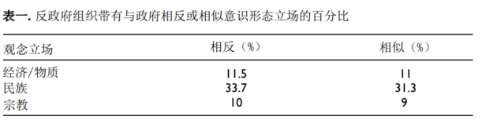
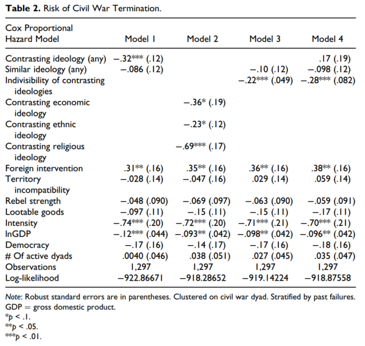
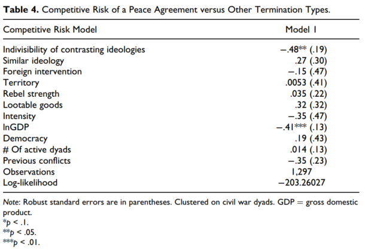

收录于合集

作品简介
【作者】 埃里克·基尔斯（Eric Keels），田纳西大学国际安全博士后研究员；克丽丝塔·维甘（Krista Wiegand），田纳西大学政治科学系副教授。
【编译】 肖龙（国政学人编译员，佛罗里达大学政治科学系博士生）
【校对】 胡瑞琨
【审核】 吴天麟
【排版】 陈旻雨
【美编 】马颖
【来源】 Keels, Eric, Krista Wiegand, “Mutually Assured Distrust: Ideology and Commitment Problems in Civil Wars,” Journal of Conflict Resolution 64, vol.10 (November 2020): 2022-2048.
期刊简介
Journal of Conflict Resolution 《冲突解决杂志》是一本融合了社会科学理论和人类冲突研究的跨学科杂志。其着眼于国家之间和国家内部的冲突，但也探索各种可能有助于理解战争与和平问题的群体间和人际冲突。其2019年影响因子为2.644。
互不信任协议：
内战中的思想观念和承 诺问题
Mutually Assured Distrust: Ideology and Commitment Problems in Civil Wars
内容提要
在当今的内战研究中，学者们普遍依赖于谈判问题以解释为何有些内部武装冲突难以解决，并认为承诺问题是一个阻挠停战谈判的关键因素。然而，如果承诺问题是一个普遍存在于内战中的因素的话，如何去解释为什么有些冲突比其他冲突更容易通过谈判解决呢？作者认为，双方作战人员之间的思想观念差异加剧了内战中的承诺问题。假设在内战中，特定的思想观念被交战双方用来赢得支持，那么违背各方思想观念的妥协让步则有可能使其失去支持。在思想观念极度两极化的情况下，妥协措施则会被看作是相对的而非绝对的，从而使得双方很难让步妥协。作者通过考察从1975到2011年的所有内战的持续时间和结果，定量化地测试了他们的假设。
文章导读
01
**** 内战之间的差异与谈判问题
在过去的二十年中，许多冲突研究学者为解释为何有些内战久未解决做出了很好的尝试。目前，此题目下的主导方法便是研究内战中的谈判方式。学者们通常认为，在许多旷日持久的内部武装冲突中，交战双方之间的承诺问题便是使停战协议极难达成的主要原因。在缺少体制结构或国际协助的情况下，双方都有私自违背协议的倾向和理由，由此导致任何可信的承诺或协议构成困难重重。
然而，一个悬而未决的问题便是为何部分冲突可以比其他冲突更快解决。乍得政府在没有实际国际协助的情况下与联邦共和国叛军（Armed Forces of the Federal Republic, AFFR）在仅仅七个月的战斗后便达成了停战协议。同样的，乌干达的穆塞维尼政府可以在仅一年的冲突后与乌干达人民民主军（Ugandan People’s Democratic Army, UPDA）达成和平协议，却迟迟无法解决其与圣主抵抗军（Lord’s Resistance Army, LRA）的长达三十年的冲突。如果承诺问题使内战谈判中的一个普遍问题，如何去解释其在不同情况下的不均影响呢？
关于承诺问题的不同效应的一种解释就是双方争执问题的性质。例如，诸如自决权或宗教习俗传播等问题经常会使得谈判环境复杂化，令处于争端下的各种问题被认为不可分割（indivisible），从而令达成共识难上加难。虽然这种无形的（intangible）且不可分割的议题在国家间冲突中经常被讨论，但是在国家内冲突中却较少被注意到。许多谈判研究倾向于淡化这种不可分割的利害关系（indivisible stakes）在谈判中的影响。但是，很难相信这种不可分割议题所扮有的重要角色仅存于国家间冲突，而非国家内冲突。
作者指出，政府和反政府双方所各自主张的思想立场经常会在不经意间使停战谈判复杂化。 当反政府组织拥有与中央政府相左的思想观念和目标时，便会产生更多难以调和的争议。 冲突双方在各自维持一系列思想观念以拉拢民众支持的情况下，不同的立场会限制双方互相信任，信守协议的可能性。其中，围绕在宗教或种族议题上的思想观念分歧比经济议题更加难以分割，导致内战更加难以结束。
02
**
**
探析内战中的思想观念
本文对于思想观念（ideology）的定义沿用了已有文献的说法，即是“囊括了一个相关群体的身份（阶层，种族，或其他社会群体），表达了该群体的不满或面对的挑战，指明该群体的目的（政治变革，或保护政治变革带来的威胁），以及其行动计划（不管清晰与否）的一系列观念系统”。该观念则包含了各种相关谈判议题。比如，在苏丹解放运动组织给苏丹政府提出的近140多项要求中，许多都可以浓缩为意识形态目标，比如赋予民族自决权，挑战种族等级制度，或是反对政府严格实行伊斯兰教法。因此，作者认为，交战双方的思想观念的不同之处及其对于停战谈判的影响很值得研究。
在已有文献的基础上，作者认定，交战双方（政府军与反政府军）会选用不同思想观念来为自己阵营的政策目标赢得支持。这种政策目标既可以是维护既有现状，也可以是呼吁巨大变革。 这种基于思想观念上的动员策略会对和谈环境造成负面影响，并最终损害交战双方的确实可信兑现和平承诺的能力。 尤其是当一个反政府组织的思想立场与该国政府完全对立时，即当有两种对立思想立场（contrasting ideological position）存在时，承诺问题便可加剧。当和谈中的妥协让步意味着需要某一方或双方违背思想观念时，任何一方都有理由相信对方会违反和平协定，因为违背己方思想观念即意味着将会疏远自己赖以生存的民众基础和支持。另一方面，作者认为，若是交战双方的思想观念并非对立，则思想观念问题在谈判中就不那么显要了。
03
交战双方的思想动员
思想观念的一个关键用处就是能够使反政府军和当权政府筹募国内外支持。当然，在内战中，其还可以充当其他角色，比如维持群体凝聚力和行为准则、鉴别外群体（out- group）作为军事目标、为恐怖主义辩护，等等。作者在本文中着重考察其作为动员和组织机制的作用。
在内战中，政府军和反政府军双方都需要在原有的思想立场上进一步迎合各方面的喜好，比如民众、赞助人、精英团体以及其他利益集团以获取支持。叛军领袖们需要为自己谋取境内外支持，政府官员们也需要物质支持来支援剿匪活动。这两股势力的背后是两大分别拥有不同意识形态的阵营。比如，为了获得首都喀土穆的主要部落的支持，前苏丹总统尼迈里于70年代末期摒弃了可以带来和平且基础广泛的世俗化政策，转而施行强硬的伊斯兰教思想路线。
图1：南苏丹士兵。来源：Quartz Africa
思想阵营的形成一部分是建立在己方阵营信守承诺的基础上的。不管是民族主义、宗教信条、又或是经济型态，依靠思想观念问题获得支持的参战方一旦出尔反尔，则必须承担失去很大部分支持者的风险。
04
思想观念、承诺问题、以及冲突解决
虽然各种群体可能会不满政府的许多诸如公共支出冗杂、土地权益、领导人换届之类的问题，但是这些要求大都不会完全反对国家的思想形态目标。同样的，反政府群体也可能会提出与政府政策关系不大，但是十分关系到思想意识问题的承诺。比如，反政府军可能会为了将自己与政府区分开来，运用截然不同的经济观念，或是反对一个政府的男权传统并推广激进的性别平等观。因此，在停战谈判中，如果两个群体所持社会经济观念完全相反，一方在思想目标上的妥协都会被另一方视为是自己在意识形态目标上的损失。当双方均具有相反的意识形态时，任何从这种谈判中得到的利益会被认为是相对的（relative），而非绝对的（absolute）。
由此可以推论出，若是一个冲突是以意识形态分歧为中心的（即完全相反的思想观念），那任何的解决方案都需要冲突某一方或双方在意识形态上做出退让。承诺问题（commitment problem）由此而产生：没有一方信任对方会在不失去己方支持的情况下可信地做出意识形态让步。假定交战双方均使用思想理念或意识形态问题来为自己赢得民众支持，那让双方都全力交涉以达成和解是很难的，因为双方均不希望违背自己的思想形态从而失去可观的支持。
作者也提到，在叛乱活动之初，叛乱分子可能会为了寻求支持，提出与当权政府完全相反的思想观念，从而建立一个强有力的支持者阵营。然而，这也让他们面临了一个战略难题：即过于强烈的思想分歧会使日后的停战尝试愈加困难，可是能够降低停战难度的思想观念却也会同时降低他们得到大规模支持的可能性。因此，就算是在双方领袖知道停战谈判是终止战争的最可行方法，内战也可能得不到解决。比如，在第二次苏丹内战中，虽然能够武力镇压南方叛军的可能性微乎其微，政府军中的不少官员仍然希望与南苏丹人民解放运动继续交战。很大程度上，这是因为喀土穆内部的精英团体不想满足南方叛军的去宗教化要求，认为那样会 “削弱伊斯兰教运动“，削弱政权意识立场。
另一方面，作者认为更加可具象化的思想观念分歧则可以有更多可行的让步余地。诸如针对公共支出冗杂、行政权力过大、机会过于不均之类的问题所提出的条件都是可以具体观测到的。相反的，当观念分歧向非具体问题偏移，诸如种族身份认知、性别行为规范（比如男权执政）、或是宗教在社会中的地位，那么谈判就会变得困难重重。比如，虽然经济观念也涉及到一系列复杂的政府角色和市场定位问题，但是其所需的政策要求比种族关系或宗教问题要简单得多。解决农村地区不满的土地改革可以通过为个人或集体提供一揽子补偿措施来实现，解放经济也可以通过为部分关键行业提供保护性措施来实行。不过，在涉及到诸如民族主义、主权问题、宗教等议题上，可行的调停办法将很难实现。
05
研究设计以及结果
综合上述讨论，本文提出了以下四条主要假设：
1. 当反政府集团采用与政府完全相反的一套思想观念时，则他们会加剧承诺问题并延长冲突的持续时间。
2. 当反政府集团采取的思想观念与政府相仿时，则会减轻承诺问题并缩短冲突的持续时间。
3. 当相反的思想观念变得愈加不可分割，则停战交涉会越来越困难，从而延长内战持续时间。
4. 当相反的思想观念变得愈加不可分割，内战以和谈方式结束的可能性降低。
为了检验这四条假设，作者搜集了从1975到2011年的所有内部冲突解决的数据。这些数据的主要来源为乌普萨拉冲突数据项目（Uppsala Conflict Data Program, UCDP）的冲突终止数据库（Conflict Termination Dataset），涵括了关于各个内战案例的开始日期和结束日期，以及其结果和结束方式。作者的研究样本中，内战的平均持续时间为4.47年，最长的有42年。
为了测量各种已知的思想意识形态，作者识别出了三种观念数据。一是经济观念。数据来源为世界银行。二是种族观念，从ACD2EPR数据库中得到。三是宗教观念，作者运用了宗教与武装冲突数据库（Religion and Armed Conflict Database）于2018年所提供的数据以及另一组发表于2016年的叛乱组织意识形态（rebel group ideology）数据。若是一个叛乱组织同时提出多种意识观念问题，则仅以其中最不可调和的那一个为准。下表为不同观念立场的叛乱组织的出现频率一览。
表一：叛乱组织的观念立场。

来源：译者从原文摘译
在以上三个自变量以外，作者还加入了控制变量以确保结果的显著性。诸如有无外国军事介入（Foreign intervention）、有无领土争端（Territory incompatibility）、双方有无掠夺物资（Lootable goods）、冲突强度（Conflict intensity）、国民生产总值（InGDP）、内乱国是否为民主国家（Democracy）等控制变量均被加进了比例风险模型（Cox Proportional Hazard Model）分析当中。以下为分析结果。
表二：比例风险模型结果。

来源：译者从原文摘录
表二中的每个模型里的正系数即代表内战结束的风险（即可能性）增加，而负系数即代表内战结束的风险下降。也就是说，当内战结束的风险（risk）下降时，内战持续时间就会延长。分析结果为作者的论点提供了强有力的支持。当反政府组织与政府有着完全相反的观念立场时，内战结束风险显著下降。其中，相反的经济和种族观念的影响较弱，而完全相反的宗教观念对结束内战可能性的影响则非常显著。另一方面，模型结果也显示出，双方相似的观念立场与内战结束风险似乎没有显著关系。作者指出，这可能是因为当双方拥有相似的立场时，其他非意识形态议题会在谈判中拥有更高的重要性。
作者又用了竞争性风险模型（Competitive Risk Model）来进行第二次分析，并得到了相同的结果。正如前文所述，这次分析结果显示，当意识形态的不同越来越呈现出不可调和的状态，则内战不仅会持续更长时间，其以和平方式结束的可能性也会降低。
表三：竞争性风险模型结果。

来源：译者从原文摘录
06
结论
由此，作者得出结论： 在内战中，政府和反政府双方的完全相反的意识形态和思想观念会使得和谈进展更加缓慢，妥协让步更加困难，战乱冲突更加持久，且会使一场冲突更难以用和平方式解决。 基于思想意识分歧的谈判问题起源于当交战双方都被自己的思想立场牢牢捆住时，任何一方的妥协让步都有可能会违背立场从而失去那一方的民众和精英的支持。当没有一方可以确保遵守和平协议，也无法相信对方可以确保遵守的时候，这就造成了典型的承诺问题。作者认为，根据理论和数据分析结果，本研究可带给我们以下三个启示。一，当内战双方有完全不同的思想观念立场时，其展开的谈判从一开始就更难成功。二，当冲突中有激烈的思想分歧时，这些冲突中都通常会有第三方调和或军事介入。三，当相左的意识形态越来越不可调和且不可具象化时，谈判（无论是否有外界调解）将会非常难解决冲突。在其他的更加可具象化的冲突里，比如在领土或经济政策争端里，第三方调和或介入或许可以更加有效。
译者评述
在国家间与国家内冲突研究范式中，承诺问题（commitment problem）与议题不可分割性（issue indivisibility）一直是两大热点议题。在当今国际社会的各种战乱冲突中，解决纷争的过程通常就是势力间讨价还价的过程。如果双方无法就分歧的解决达成一致的预期，即双方都清楚地知道妥协让步的代价将小于和平所带来红利时，则双方的讨价还价将最终失败。承诺问题便是在这样的过程中，对于妥协让步的代价产生怀疑，并因此而拒绝相信对方会信守承诺，所以为了确保不受损失而选择继续交战【1】。在内战研究的众多案例中，承诺问题便发生在当政府和叛乱组织均不愿意在和谈结束后确实可信地履行承诺。传统观念认为，政府不愿意相信叛乱组织能够在被给予承诺之后立马结束武装斗争，而反政府军也不相信政府会履行承诺，因为其认为在结束武装斗争之后，政府将会在战略和权力上占有绝对优势【2】。本文作者基尔斯和维甘明显对此解释存有异议，并由此发展出了他们的意识形态的不可分割理论。
议题不可分割性便是由于议题本身的性质，导致双方不存在任何博弈或讨价还价的空间，也不可能就争议问题达成折衷的解决方案。也就是说，不可分割性起源于当某一方强调思想目标的整体性，其意识形态的高强度导致他们没有办法从中分割一部分出来进行让步妥协。传统上，冲突研究学家并不把议题不可分割性看成是决定性条件，并认为这类主要都是一些特殊性质问题，诸如领土主权归属和其他历史遗留问题。目前，新的范式开始对此问题进行反思【1】。其中，本文就是将议题的不可分割性放在了中心位置上，并认为诸如宗教和种族的思想观念问题正是加剧了议题的不可分割性，并使得分歧更加不可调和。当两个势力均有不可调和的意识形态矛盾时，冲突的不可避免性似乎是常识。作者在本研究中系统性地分析了意识形态在国家内冲突中带来不可分割议题的作用，为未来的冲突研究中的不可分割议题方向提供了进一步的理论和数据依据。
译者认为，本文可以为今后的学者们提供以下两个深入研究方向。第一，作者在分析结果时注意到了第三方介入作为一个控制变量的统计显著性，也在理论介绍中简单提到了该变量。第三方介入在有激烈思想冲突的内战中占有什么样的位置？其对于双方和谈是起到调和作用还是恶化作用？此问题值得继续研究。第二，作者在文章中简单提到数个内战案例，比如译者在本文中常用的（南）苏丹案例。在内战研究中，除了作者所用的量化方法外，翔实的案例追踪是必不可少的。因此，运用定性方法来探讨本文问题或许可以为内战意识形态探究提供一种新的解释角度。
参考文献
[1] 董柞壮. 国际冲突研究的理性范式：争论及启示. 教学与研究，2019，（12）：93-107.
[2] Mattes, Michaela and Burcu Savun. “Fostering Peace after Civil War: Commitment Problems and Agreement Design”. International Studies Quarterly , 2009, (53): 737-759.
文章观点不代表本平台观点，本平台评译分享的文章均出于专业学习之用, 不以任何盈利为目的，内容主要呈现对原文的介绍，原文内容请通过各高校购买的数据库自行下载。
**
**
**
**
**
**
添加 “国小政”微信
获取最新资讯


国政学人
支持学术公益与知识传播
微信扫一扫赞赏作者 __赞赏
已喜欢，对作者说句悄悄话
取消 __
发送给作者
发送
最多40字，当前共字
上一页 1/3 下一页
长按二维码向我转账
支持学术公益与知识传播
受苹果公司新规定影响，微信 iOS 版的赞赏功能被关闭，可通过二维码转账支持公众号。